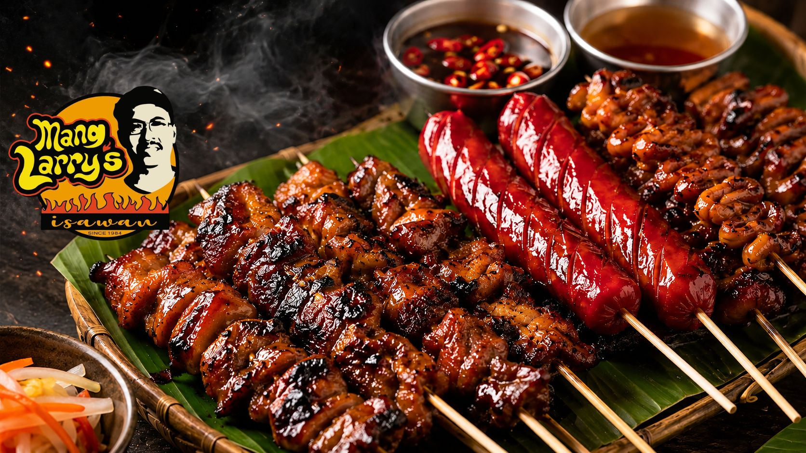
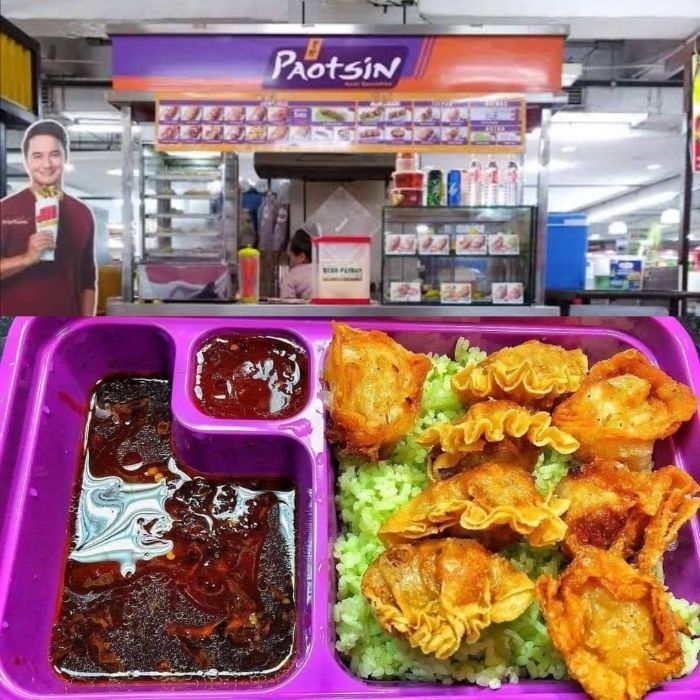

Chic-Chicken
Chicken Meals
I recommend Chic-Chicken because it offers tasty and satisfying chicken meals that are great for anyone who enjoys Filipino-style food.

A personal guide to Filipino food spots I recommend for delicious, affordable, and satisfying meals.
Chicken Meals
I recommend Chic-Chicken because it offers tasty and satisfying chicken meals that are great for anyone who enjoys Filipino-style food.
Grilled Filipino Street Food
I recommend Mang Larry's Isawan because it offers flavorful grilled Filipino street food and is a great place to try classic local favorites.

Siomai, Dumplings, and Rice Meals
I recommend Paotsin because it offers affordable and delicious dumplings, siomai, and rice meals that are convenient for students and food lovers.
